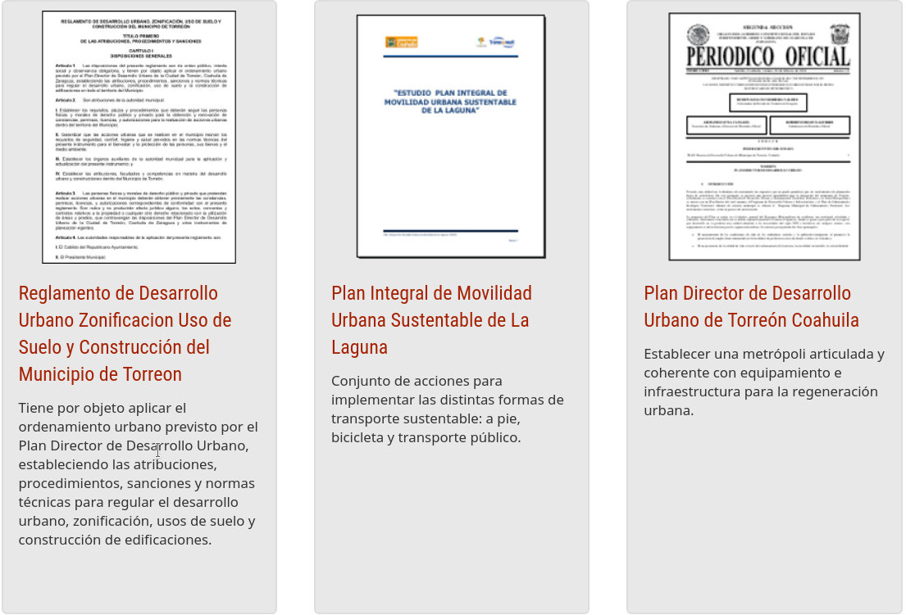
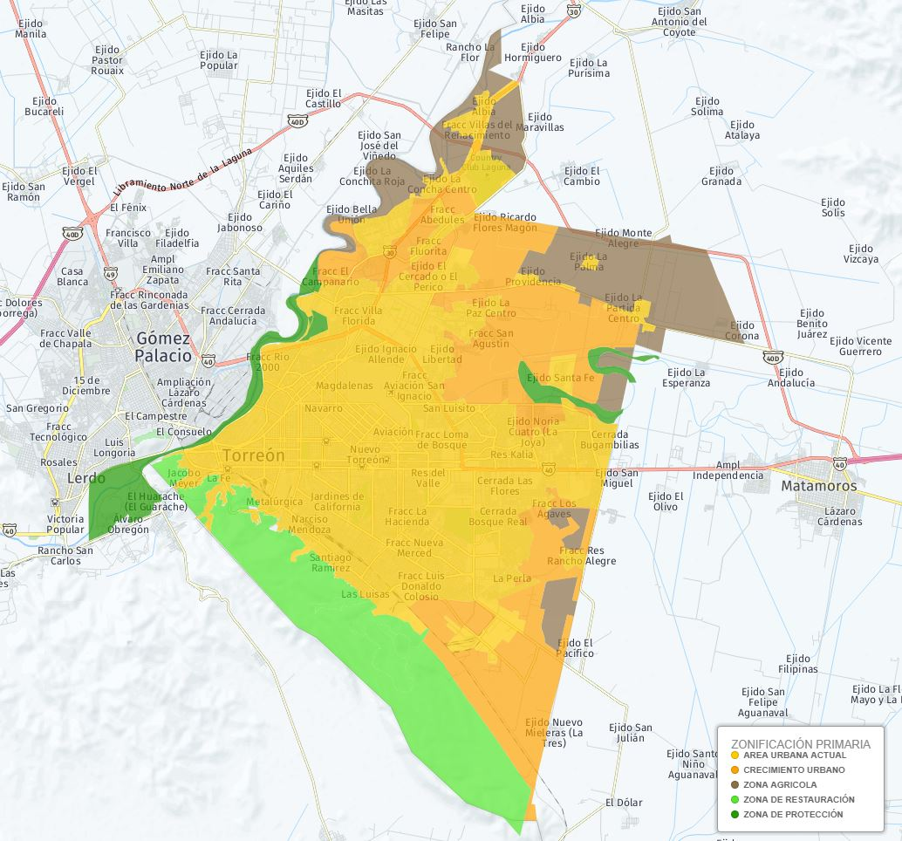

Los instrumentos de gestión son documentos jurídico-administrativos de carácter técnico que establecen las bases para el adecuado funcionamiento del aparato gubernamental. Constituyen el quid de la función pública, ya que determinan la ruta de operación de cada unidad administrativa que atiende necesidades, ya sea a través de la gestión de trámites o de la prestación de servicios.
En los municipios, los principales instrumentos de gestión, tienen una vocación urbana, aunque una naturaleza transversal. El Ordenamiento Ecológico del Territorio, el Ordenamiento Urbano del Territorio, el Atlas de Riesgos y el Plan Director de Desarrollo Urbano, constituyen pilares fundamentales para la adecuada gestión de un Gobierno Local. Lo anterior no deriva solo de la doctrina, sino de obligaciones legales establecidas en las respectivas leyes sectoriales que, apoyadas en el Pacto Federal, les otorgan un papel fundamental en la congruencia administrativa de coordinación de los tres niveles de gobierno.
A nivel local, los instrumentos de gestión revisten una importancia trascendental para el funcionamiento de la administración pública, por ser los gobiernos de las ciudades el primer momento de contacto de la administración pública con la ciudadanía. De tal suerte que los principios básicos de la función pública, como lo son la eficiencia y la eficacia, dependen directamente de que el gobierno local cuenta con instrumentos sólidos, actualizados y que respondan a la realidad de la sociedad que se gobierna. Asimismo, principios fundamentales, como la certeza jurídica y la seguridad jurídica para los gobernados, se pueden fácilmente materializar si se tiene un referente para la actuación del aparato gubernamental, como lo los instrumentos de gestión.

Conocer sobre los Instrumentos de Gestión
No obstante lo anterior, sería insuficiente contar con excelentes instrumentos de gestión si, por un lado, los funcionarios públicos no se encuentran familiarizados con la ejecución de aquéllos y, por otro lado, la ciudadanía desconoce tales instrumentos. Esto encuentra solución a través de los procesos de socialización de instrumentos de gestión que, lamentablemente, pocas administraciones en nuestro país consideran como necesarios y, por tanto, carecen de la correspondiente asignación de recursos para su ejecución.
Otro aspecto que no se debe dejar de lado, es la armonización jurídica de tales instrumentos con el marco normativo local. En atención al principio de legalidad, que establece que la autoridad solamente puede hacer lo que la ley le permita, si los instrumentos no son congruentes con la ley, pierden su eficacia desde el punto de vista jurídico, haciéndoles inviables, o cuando menos importantemente vulnerables a medios de impugnación.
Durante 2016 y 2017, el Municipio de Torreón desarrolló un Ordenamiento Ecológico Local del Territorio, lo que supone un importante logro, ya que, con la excepción de Cuatro Ciénegas, ningún otro municipio en el Estado cuenta con dicho instrumento de gestión. Durante 2018 se trabajará en un perfil de resiliencia para el municipio, con miras a construir un Atlas de Riesgos municipal. Así mismo, este año se trabajará en el análisis, para su actualización, de la agenda urbana municipal, lo que abarca los distintos instrumentos de gestión urbana que competen a la administración local, cerrando así la pinza con los principales instrumentos de gestión, sin descartar la necesidad de trabajar en instrumentos de menor jerarquía, pero igualmente importantes para el entramado municipal de estos insumos básicos para las políticas públicas locales.
Resulta de la mayor importancia tener en cuenta que estos instrumentos deben construirse de la mano de la sociedad, identificando puntualmente a los actores sociales cuya participación en su integración resulta imprescindible, sin dejar de mantener la puerta abierta a las y los Ciudadanos interesados en participar en el modelaje de tales documentos. No sólo es interesante esa labor, sino enormemente enriquecedora, ayudando a quienes participan en ella a conocer mejor su Ciudad y lo que es importante cuidar en ella y para ella.
Así las cosas, los gobiernos locales tienen dos retos en puerta que precisan de urgente, puntual y responsable atención: La generación de los instrumentos de gestión básicos para la administración pública municipal y la socialización -tanto al interior como al exterior del gobierno- de dichos instrumentos para lograr su plena efectividad. Por su parte, la Ciudadanía tiene también dos importantes retos: Familiarizarse con los instrumentos de gestión y exigir su observancia y cumplimiento, en la convicción de que haciendo lo propio, nuestra Ciudad -nuestra casa común- nos brindará como resultado un mejor entorno para todas y para todos.
Zonificación Primaria
